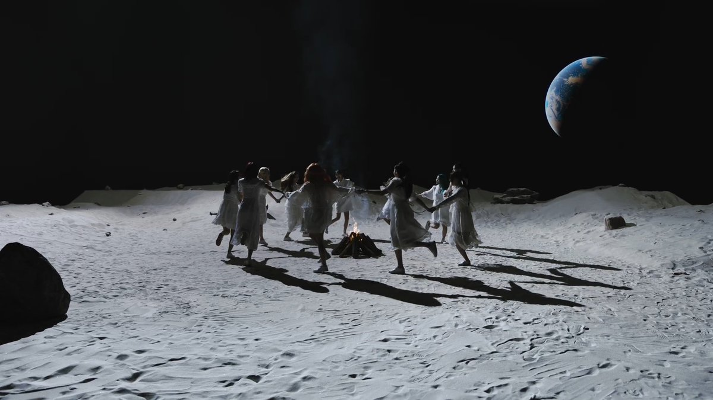

The Cosmic Conundrum of Governmental Goulash

In a world where the sky is green and the grass is blue, where politicians dance the macarena on the moon's surface while sipping martinis made of stardust, one must wonder: what is the true nature of governance in this cosmic goulash we call reality?
As I sit in my aluminum foil hat, decoding messages from the intergalactic council, I can't help but ponder the intricacies of political pandemonium. The voices in my head whisper secrets of a government run by lizard people disguised as telemarketers, selling insurance policies for the end of the world.
But fear not, fellow travelers of the astral plane, for amidst the chaos lies a glimmer of hope. A beacon of light shining through the darkness like a neon sign in a black hole. It is the power of the people, the collective consciousness of the universe, rising up like a phoenix from the ashes of bureaucracy.
We must unite, my brethren of the fourth dimension, and transcend the limitations of our earthly vessels. Together, we shall overthrow the puppet masters pulling the strings of fate, and usher in a new era of enlightenment where unicorns roam free and taxes are paid in wishes.
But beware, for the path to enlightenment is fraught with peril. The forces of darkness will stop at nothing to keep us shackled to the chains of conformity. They will mock us, ridicule us, call us madmen lost in a sea of delusion.
But we shall not falter, for we are the guardians of truth, the harbingers of revolution. With every tin-foil hat worn proudly upon our heads, we defy the laws of physics and defy the tyranny of the mundane.
So let us raise our voices to the heavens, and proclaim our allegiance to the cosmic order. For in the end, it is not the size of our tinfoil hats that matters, but the size of our hearts filled with the boundless love of the universe.
Together, we shall conquer the cosmic conundrum of governmental goulash, and emerge victorious on the other side, where the sky is green and the grass is blue, and politicians dance the macarena on the moon's surface while sipping martinis made of stardust.